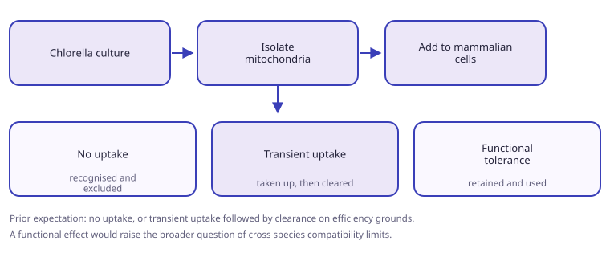
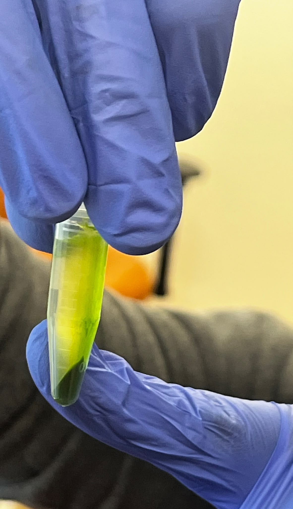
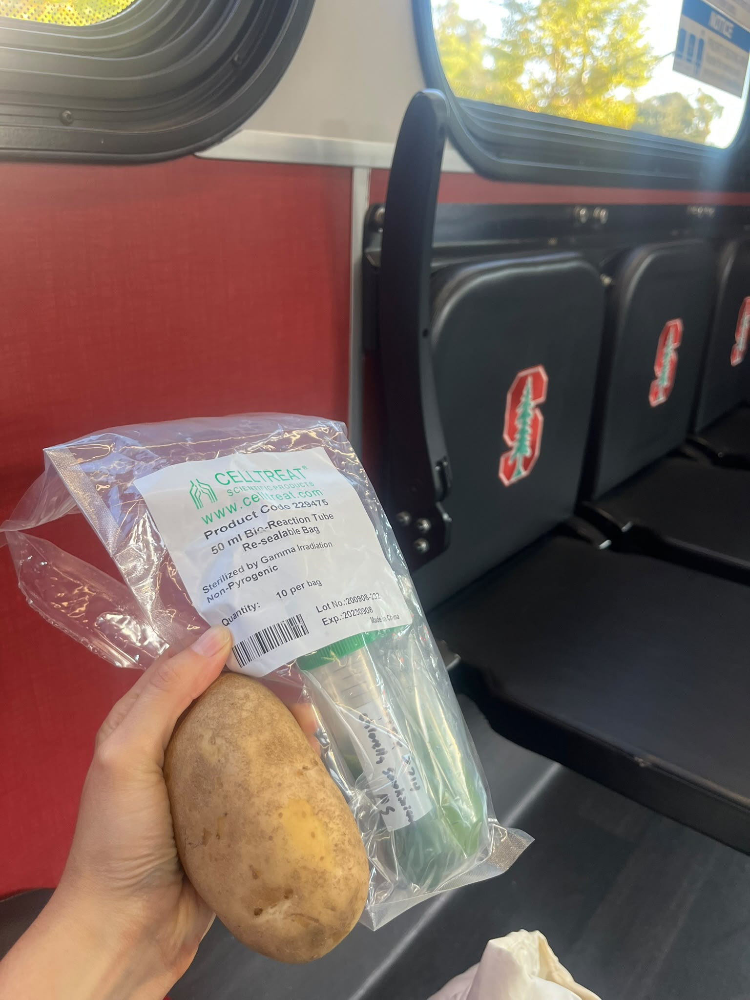

A pilot testing whether mitochondria from a photosynthetic eukaryote are recognised and functionally tolerated by mammalian recipient cells. Isolation was attempted by differential centrifugation, following the published plant protocol. It did not yield a usable preparation. A density gradient is the obvious next attempt.
Objective
- Determine whether mammalian cells take up mitochondria from a photosynthetic eukaryote.
- If they do, determine whether the mitochondria are retained or cleared.
Design
- Culture the algae and concentrate the cells.
- Isolate mitochondria.
- Add to mammalian recipient cells.
- Score against three outcomes: no uptake, transient uptake, functional tolerance.



Isolation procedure
- Adapted from the published method for isolating mitochondria from potato tubers (Havelund et al., Bio-protocol e1226). Every step is carried out at 0 to 4 °C.
- Homogenise the tissue into roughly half its volume of extraction medium, containing cysteine as an antioxidant and bovine serum albumin to bind fatty acids and phenolics.
- Adjust to pH 7.2 with potassium hydroxide and leave the homogenate to stand for 5 minutes, so starch sediments.
- Filter through two layers of cotton.
- Spin at 3,000 × g for 5 minutes to clear debris and residual starch. Keep the supernatant.
- Spin the supernatant at 18,000 × g for 10 minutes to pellet crude mitochondria.
- Resuspend the pellet in mannitol gradient buffer.
- In the published method, steps 4 and 5 are followed by a step Percoll gradient of 50%, 28% and 20% layers, spun at 40,000 × g for 30 minutes, then washes at 18,000 × g.
- Only the differential centrifugation part was attempted here. The gradient was not.
Outcome
- Differential centrifugation alone did not produce a usable mitochondrial preparation.
- This is the expected failure mode: without a density step, chloroplasts and other organelles of similar sedimentation behaviour are not separated out.
- The algal cell wall is also hard to break gently, which limits what the first spin can recover.
- No transfer into mammalian cells was reached, so the three outcomes above remain untested.
Next attempt
- Add a density gradient. Ficoll is the candidate, in place of or alongside Percoll. It is the step the published protocol relies on, and the step that was skipped here.
- Ficoll is normally run as a two-layer gradient, around 8% over 14%, with the crude pellet loaded on top and left unmixed. Free mitochondria collect in the pellet rather than at an interface, which is the difference from a Percoll preparation.
- The wall has to come apart first. Published work on thick-walled algae reports that these protocols transfer across species with minor optimisation, provided the disruption step is adapted (Füssy et al. on Chromera velia). Sonication is the obvious candidate.
- Chlorella vulgaris walls are specifically documented as resistant to disruption, so this is the step most likely to need the work.
- No Chlorella-specific mitochondrial isolation protocol appears to be published. The method has to be assembled from the plant and thick-walled algae literature.
Prior expectation
- Most likely no uptake.
- Otherwise transient uptake followed by clearance, on the grounds that these mitochondria are not efficient in a mammalian cell.
- A functional effect would open the broader question of cross-species compatibility and the limits of mitochondrial transplantation.